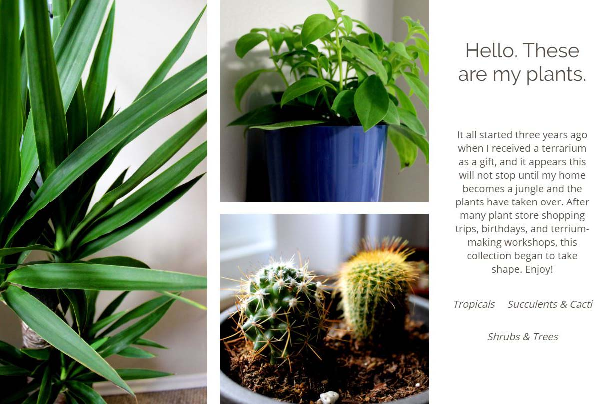

My Plant Website
I created this site not only to practice my HTML, CSS, and JavaScript skills, but also to experiment with designing for different screen sizes. I chose to showcase my plants so I could practice creating galleries using CSS flexbox and grid, and also because the plants are visually appealing and add a pop of colour to the site.
Besides the project goals stated above, the purpose of this site is to tell a story about my plants. A user arrives at the home page to get a brief introduction to the theme of the site, and can quickly see the pages available to navigate - in this case, the plant categories.
On the individual pages there is a photo of each plant. When a user clicks on a photo it becomes greyed out and white text appears, providing information on the plant. This feature was implemented with vanilla Javascript, which toggles CSS classes on and off.
Visual design
I did not follow a strict design process when creating this site. It mostly came from some layout ideas floating around in my mind and a few initial sketches. I knew I wanted a clean, minimalist style with a neutral color palette. Once I photographed and edited images of my plants the design began to take shape.
The background in most of my photos was the taupe colour walls in my home. This contrasted beautifully with the deep greens of the plants. I worked light and dark grays throughout the site and added green accents to link hovers. The photos take center-stage and add all remaining colour.
Layouts for different screen sizes
As mentioned above a goal of this project was to practice designing for different screen sizes. The user gets a slightly different experience at mobile, tablet, and desktop sizes, but the functionality of the site remains the same. I could have had the design look very similar at each size, and allow for the site to adjust according to size, but I wanted to get more creative. This site was designed with a desktop-first approach.
If you are viewing this project on a desktop browser, please adjust your window size to view each design.
Desktop

For the desktop view I used CSS Grid to implement a photo gallery. Rather than a more typical grid with square photos I wanted to show the photos in their original resolution and composition. The variety of shapes and how they interact with the negative space, especially if you change the window size while viewing, gives this design an eccentric visual experience.
I made the menu as minimal as possible. As there is a lot of space to work with on desktop size no backgrounds were included. The menu is differentiated from the rest of the page content only by being italicized and are given a green link hover. The menu is still easy to locate and there is no unnecessary clutter to distract the viewer.
Tablet
Since the tablet size gives extra space to work with compared to a mobile view I added a navigation bar. On its own this was a bit boring so designed the menu items to appear like file-folder tabs. Whatever page is active is filled with the same white background as the main page content. Inactive tabs were given a transparent gray background which changes to pale green upon mouse hover. The folder tab design allows the viewer to see where they are and and what other pages are available in one quick glance, while making use of the "overlap" design trend current at the time the site was built. Instead of a grid design, the photos simply follow each other one-by-one in a column format, and is carried though to the mobile view. This makes the overlaying text easier to read on smaller screens.
Mobile
The mobile view removes the tab style navigation bar from the tablet view and replaces it with a hamburger menu in the top right corner. When the icon is clicked/tapped the menu slides onto the screen. It is a transparent gray, like the inactive tabs on the tablet navigation bar; this was simply more visually appealing to me, as the menu didn't appear to be one solid, boring rectangle.
Conclusions
This project was a game-changer early in my web development and design learning. Many topics where I was still shaky, like CSS Grid, became much clearer and easier with practice. I worked my way through many challenges with the code, and developed my personal design style and process at the same time.
Though this project was created with simple tools and languages it remains a favorite of mine to this day.